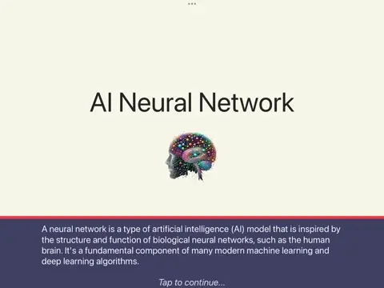
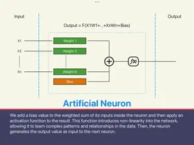
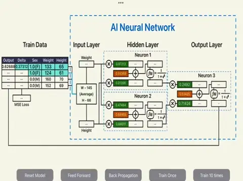
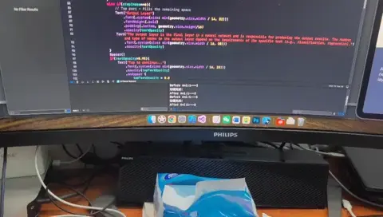
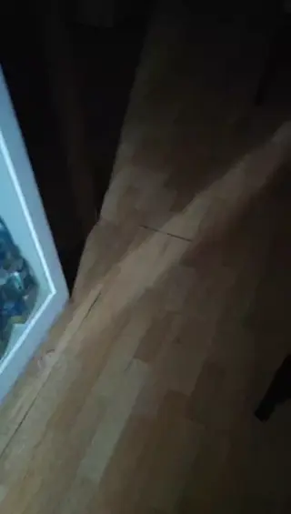
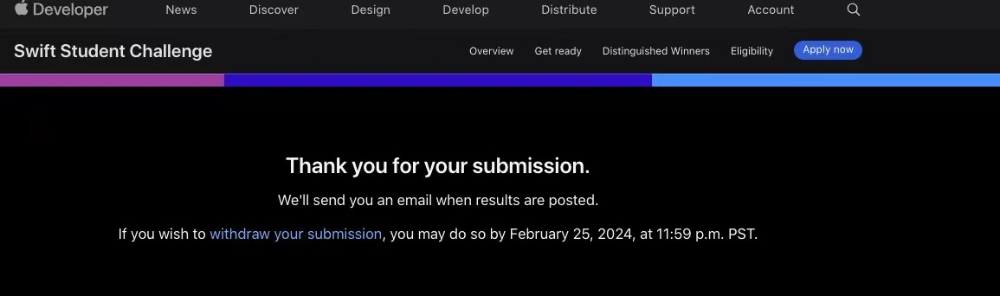
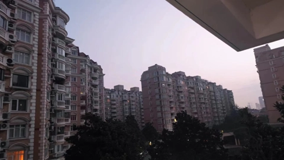

AI Neural Network - 2024 Apple WWDC Swfit Student Challenge Winner
Duration: 3 weeks full time in winter break Tools: Swift on Mac



In 2024, I returned to the Apple WWDC Swift Student Challenge, eager to explore new frontiers. Amidst the burgeoning landscape of AI, I was captivated by the technology's potential. Over the winter break, I immersed myself in AI fundamentals, culminating in developing a primary neural network using Swift. My submission showcased a step-by-step breakdown of the neural network training process, making complex concepts accessible to a broader audience. Fueled by my passion for AI, this innovative approach again secured me a coveted award.

Sweet Experience
Worked to 4 AM
Five cats with me
Early bird call
Final delivery by deadline
It's dawn